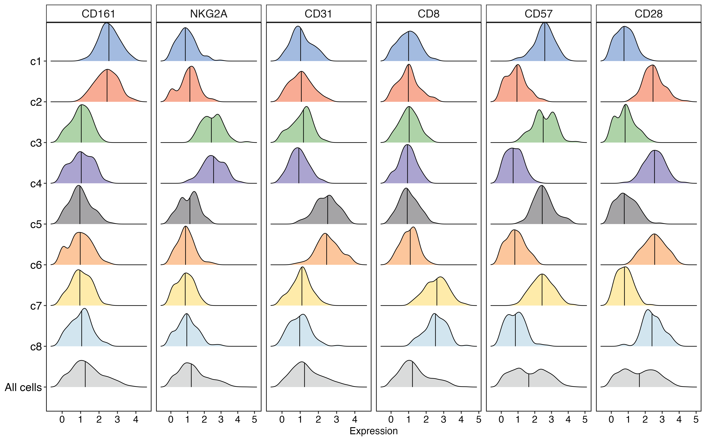

参数要点
| 参数 | 默认 | 说明 |
|---|---|---|
scales |
free_x |
分面量纲差 1000 倍时 fixed 会把小量纲压成一条竖线 |
sort_by_median |
true | 组内按中位数排序，视觉更整齐 |
show_median_line |
true | 每组画中位数竖线 |
x_log10 |
false | 表达量跨多个数量级时一定要开（素材脚本自己就用了 log10） |
plot59 · 代码 2 · 图 5 · 笔记 1 · 代码库专题
长表：分面列 + 分组列 + 数值列。

ridge plotridge_plot.png
共 3 张：点缩略图切换主图，下载按钮跟随当前主图。
图源：ridge_plot.png
从专题 README 抽取；原文顺序保留，未跑过的部分照实标注。
多个分组（细胞类型 / 处理 / 时间点）的分布叠在一起，用山脊错位排列：
既看得出每组的分布形状，也能横向比较中位数与离散度。
| 参数 | 默认 | 说明 |
|---|---|---|
scales |
free_x |
分面量纲差 1000 倍时 fixed 会把小量纲压成一条竖线 |
sort_by_median |
true | 组内按中位数排序，视觉更整齐 |
show_median_line |
true | 每组画中位数竖线 |
x_log10 |
false | 表达量跨多个数量级时一定要开（素材脚本自己就用了 log10） |
长表：分面列 + 分组列 + 数值列。
facet,group,value
Layer1,Ctrl,5.2
Layer1,Treat,7.1
Layer2,Ctrl,5.4render_plot method_id="plot59"
arguments: {"csv_path": "your.csv",
"columns": {"facet": "facet", "group": "group", "value": "value"}}free_y 对山脊图基本无效 —— 山脊图的 y 轴是离散分组轴，x 才是数值轴。free_y，实测在分面量纲相差 1000 倍时 fixed 会把小量纲free_x。所以默认改为 free_x。facet_wrap(scales = scales) 会静默失效 —— 形参同名会让 R 惰性求值解析到自身，scales 完全不生效。模板里变量必须改名（这里叫 scales_mode）。x_log10（要求所有值 > 0，否则报错）。MsTt模板/250303_ridges_facet/（含真实数据 data_facet2_example_long.csv）。
2 个源码文件，按目录顺序；本机绝对路径已替换为 ~。 代码可复制，但需要按自己的数据改路径与参数。
# 加载必要的包
library(tidyverse)
library(ggridges)
# 创建示例数据
set.seed(123) # 设置随机种子确保结果可重现
# 创建8个细胞群的示例数据
clusters <- paste0("c", 1:8)
markers <- c("CD161", "NKG2A", "CD31", "CD8", "CD57", "CD28")
n_cells_per_cluster <- 100
# 创建空数据框
data <- data.frame(matrix(ncol = length(markers) + 1, nrow = 0))
colnames(data) <- c("group", markers)
# 为每个cluster生成随机数据，让不同的cluster在不同marker上有不同的表达模式
for(cluster in clusters) {
cluster_data <- data.frame(
group = rep(cluster, n_cells_per_cluster),
CD161 = rnorm(n_cells_per_cluster, mean = ifelse(cluster %in% c("c1", "c2"), 2.5, 1), sd = 0.6),
NKG2A = rnorm(n_cells_per_cluster, mean = ifelse(cluster %in% c("c3", "c4"), 2.5, 1), sd = 0.6),
CD31 = rnorm(n_cells_per_cluster, mean = ifelse(cluster %in% c("c5", "c6"), 2.5, 1), sd = 0.6),
CD8 = rnorm(n_cells_per_cluster, mean = ifelse(cluster %in% c("c7", "c8"), 2.5, 1), sd = 0.6),
CD57 = rnorm(n_cells_per_cluster, mean = ifelse(cluster %in% c("c1", "c3", "c5", "c7"), 2.5, 0.8), sd = 0.6),
CD28 = rnorm(n_cells_per_cluster, mean = ifelse(cluster %in% c("c2", "c4", "c6", "c8"), 2.5, 0.8), sd = 0.6)
)
# 确保表达值为正
cluster_data[, markers] <- lapply(cluster_data[, markers], function(x) pmax(0, x))
# 将数据添加到总数据框
data <- rbind(data, cluster_data)
}
# 添加 All cells 组
all_cells_data <- data
all_cells_data$group <- "All cells"
data_combined <- rbind(data, all_cells_data)
# 转成长数据格式
data_combined_long <- data_combined %>%
pivot_longer(cols = -'group',
names_to = "type",
values_to = "Expression")
# 定义顺序
data_combined_long$group <- factor(data_combined_long$group,
levels = c("All cells","c8","c7","c6","c5", "c4","c3","c2","c1"))
data_combined_long$type <- factor(data_combined_long$type,
levels = c("CD161","NKG2A","CD31","CD8","CD57","CD28"))
# 设置颜色
my_color <- c("#d4d5d5", "#cae1ec", "#fee89b", "#fbbc8b", "#959496",
"#9c94c8", "#a0cb99", "#f79c81", "#93afdb")
# 绘制山脊图
plot <- ggplot(data_combined_long, aes(x = Expression, y = group, fill = group)) +
geom_density_ridges(quantile_lines = TRUE, quantiles = 2, alpha = 0.85, scale = 0.95) +
facet_wrap(type~., ncol = 6, scales = "free_x") +
scale_fill_manual(values = my_color) +
theme_test(base_size = 15) +
theme(panel.border = element_rect(linewidth = 1, color = "black"),
strip.background = element_rect(linewidth = 1, fill = "white"),
strip.text = element_text(size = 18),
axis.line = element_line(linewidth = 1), # 修改这里，从size改为linewidth
axis.text.x = element_text(size = 16, colour = "black"),
axis.text.y = element_text(size = 18, colour = "black"),
axis.title.x = element_text(size = 16),
axis.title.y = element_blank(),
axis.line.x = element_blank(),
axis.line.y = element_blank(),
legend.position = "none")
print(plot)
# 加载所需的包
library(tidyverse)
library(ggridges)
library(scales)
library(ggprism)
library(cowplot)
# 创建示例数据
set.seed(123)
# 定义参数
cell_types <- c("LT-ILC1", "CD49a+trNK", "CD49a-trNK", "cNK", "clLC1", "lLC2", "lLC3")
response <- c("+", "-")
factors <- c("IFN-γ", "IL2", "TNF-α", "GM-CSF")
# 生成数据框
data_sim <- expand.grid(
type = cell_types,
respons = response,
factor = factors,
stringsAsFactors = FALSE
)
# 生成模拟数据值
# 为不同细胞类型设置不同的基础响应模式
generate_values <- function(cell_type, response_type, factor_type) {
# 根据细胞类型和因子类型调整基础表达水平
base_mean <- case_when(
cell_type == "LT-ILC1" & factor_type %in% c("IFN-γ", "TNF-α") ~ 3.2,
cell_type == "CD49a+trNK" & factor_type %in% c("IFN-γ", "GM-CSF") ~ 3.0,
cell_type == "CD49a-trNK" & factor_type %in% c("TNF-α", "IL2") ~ 3.1,
cell_type == "cNK" & factor_type %in% c("IFN-γ") ~ 3.3,
cell_type == "clLC1" & factor_type %in% c("GM-CSF", "IL2") ~ 2.8,
cell_type == "lLC2" & factor_type %in% c("IL2") ~ 3.4,
cell_type == "lLC3" & factor_type %in% c("TNF-α", "GM-CSF") ~ 2.9,
TRUE ~ 2.0
)
# 正响应值较高，负响应值较低
mean_value <- if(response_type == "+") base_mean + 0.7 else base_mean - 0.3
# 生成对数正态分布的值
values <- 10^rnorm(200, mean = mean_value, sd = 0.4)
# 确保值在合理范围内
values <- pmax(10, pmin(values, 1e5))
return(values)
}
# 为每个组合生成值并添加到数据框
value_list <- list()
for(i in 1:nrow(data_sim)) {
values <- generate_values(data_sim$type[i], data_sim$respons[i], data_sim$factor[i])
value_df <- data.frame(
type = data_sim$type[i],
respons = data_sim$respons[i],
factor = data_sim$factor[i],
value = values
)
value_list[[i]] <- value_df
}
# 合并所有数据
data_long <- do.call(rbind, value_list)
# 创建ID字段
data_long$id <- paste(data_long$type, data_long$respons, sep = "_")
# 定义分组顺序
data_long$factor <- factor(data_long$factor, levels = c("IFN-γ", "IL2", "TNF-α", "GM-CSF"))
data_long$id <- factor(data_long$id, levels = c("LT-ILC1_+", "LT-ILC1_-",
"CD49a+trNK_+", "CD49a+trNK_-",
"CD49a-trNK_+", "CD49a-trNK_-",
"cNK_+", "cNK_-",
"clLC1_+", "clLC1_-",
"lLC2_+", "lLC2_-",
"lLC3_+", "lLC3_-"))
# 设置颜色
my_color <- rep(c("#ff00ff", "#5600ac", "#cc2e2d", "#8bfdfd",
"#4c4c4c", "#61a4f9", "#008100"), each = 2)
# 绘制主图
p <- ggplot(data_long, aes(x = value, y = id, fill = id, color = id, alpha = respons)) +
geom_density_ridges(linetype = 1, linewidth = 0.3) +
scale_alpha_manual(values = c("+" = 1, "-" = 0.2), guide = "none") +
scale_fill_manual(values = my_color, guide = "none") +
scale_color_manual(values = my_color, guide = "none") +
facet_wrap(factor~., ncol = 4, scales = "free_x", strip.position = "bottom") +
scale_x_log10(guide = "prism_minor",
breaks = c(1e1, 1e2, 1e3, 1e4, 1e5),
labels = trans_format("log10", math_format(10^.x)),
minor_breaks = rep(1:9, 9)*(10^rep(0:9, each = 9)),
expand = c(0, 0))+
scale_y_discrete(expand=expansion(mult=c(0, 0.15)),
labels = function(y) {
sapply(y, function(id_value) {data_long$respons[data_long$id == id_value][1]})
}) +
theme_test() +
theme(axis.title = element_blank(),
axis.text.x = element_text(color = "black", size = 6),
axis.text.y = element_text(color = "black", size = 16, face = "bold", hjust = 0.5, vjust = -0.5, margin = margin(r = 20)),
axis.ticks.y = element_blank(),
panel.spacing.x = unit(0.2, "mm"),
strip.background = element_rect(fill = "white", color="white"),
strip.placement = "outside",
strip.text = element_text(color = "black", size = 18, face = "bold"))
# 创建注释
anno <- ggdraw() +
draw_label("LT-ILC1", y = 0.2, size = 20, fontface = "bold", color = "#ff00ff") +
draw_label("CD49a+trNK", y = 0.32, size = 20, fontface = "bold", color = "#5600ac") +
draw_label("CD49a-trNK", y = 0.43, size = 20, fontface = "bold", color = "#cc2e2d") +
draw_label("cNK", y = 0.54, size = 20, fontface = "bold", color = "#8bfdfd") +
draw_label("clLC1", y = 0.65, size = 20, fontface = "bold", color = "#4c4c4c") +
draw_label("lLC2", y = 0.76, size = 20, fontface = "bold", color = "#61a4f9") +
draw_label("lLC3", y = 0.87, size = 20, fontface = "bold", color = "#008100")
# 合并主图和注释
final_plot <- plot_grid(p, anno, ncol = 2, rel_widths = c(0.8, 0.2))
# 显示最终图形
print(final_plot)
# 保存图形到当前文件夹
ggsave("ridge_plot_facet2.pdf", final_plot, width = 16, height = 10, units = "in", dpi = 300)
ggsave("ridge_plot_facet2.png", final_plot, width = 16, height = 10, units = "in", dpi = 300)
# 可选：保存示例数据以备将来使用
# 将数据转换为宽格式保存
data_wide <- data_long %>%
select(type, respons, factor, value) %>%
group_by(type, respons, factor) %>%
mutate(row_id = row_number()) %>%
pivot_wider(
names_from = c(type, respons, factor),
values_from = value,
names_prefix = "value_"
) %>%
select(-row_id)
# 保存示例数据
write.csv(data_long, "data_facet2_example_long.csv", row.names = FALSE)这个专题已经做成确定性工具，调用后直接返回图片， 不需要 AI 现写代码。